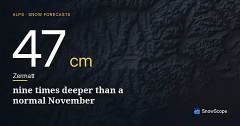
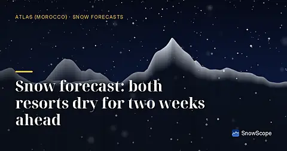
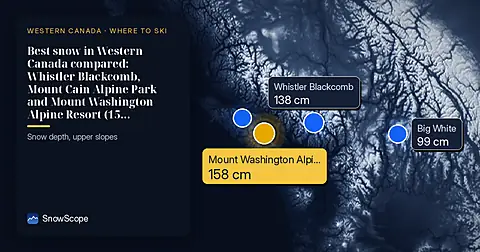
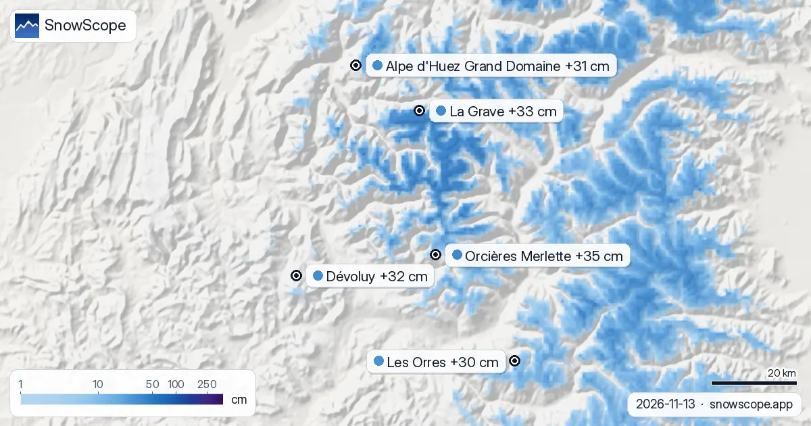
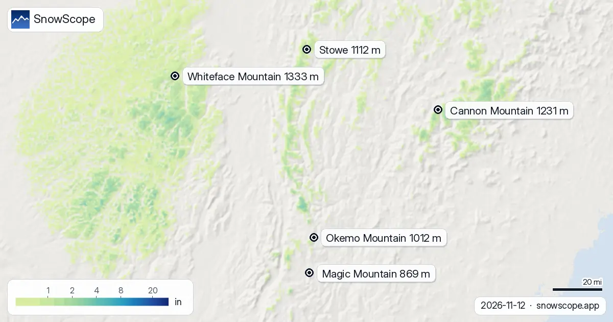
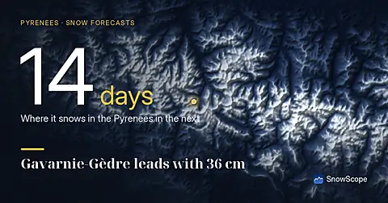
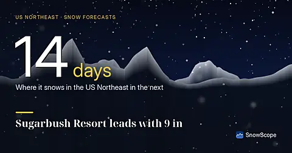
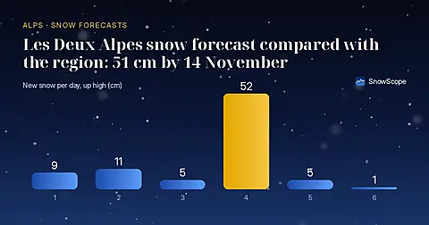
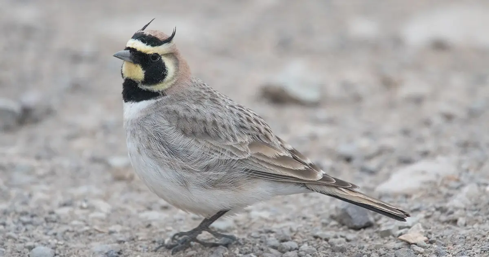
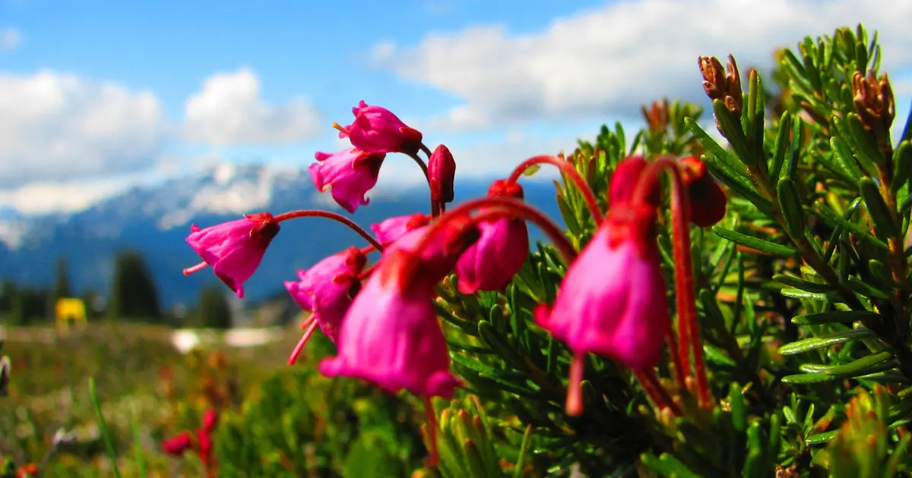

Snow reports · Snow line
Daily snow reports for skiers: where the snow is, what is coming and where to ski, from the SnowScope snow map and measuring stations. Every number comes from that day's data.

The Pyrenees will see 91 cm of new snow in the next 14 days, with half falling in week 1. Upper slopes above 2500 m get the most. Forecast from 2026-11-18.

How much snow will the mountains gain? Our table shows the resorts with the most new snow forecast for the next 24 hours and until 22 November, in …

Only 16 US Northeast resorts have snow on 18 November. Tuckerman Ravine leads with 38 cm (15 in) on upper slopes. Early-season cover is fragile; stick to groomed runs.

US West snow report, 18 November. Forecast to 21 November: 33 in (83 cm) at China Peak, 30 in (77 cm) at Mammoth Mountain and 28 in (70 cm) at June …

Where should you go skiing in the US West? If we were going this weekend, we would choose Palisades Tahoe Alpine Meadows, Kingvale and Boreal, based …

Western Canada forecast: 90 cm new snow at Mount Washington in the next two weeks, with 70 cm expected in late November and early December. Model run 2026-11-18.

Zermatt has 47 cm on upper slopes today, 690% above the November median. The 0°C level stays above 2200 m through Friday.

Over the next days the 0 °C level in the Pyrenees should move between 1,900 m and 3,670 m, according to our forecast. At the warmest time of day the …

The Pyrenees will see up to 63 cm of new snow in the next 14 days, with 70% falling in week one. Best snow expected above 2000 m.

New snow forecast for the Alps through early December. Saint François Longchamp leads with 228 cm expected over 14 days, starting with 35 cm on Thursday.

Alps snow report, 18 November. We weighed the snow already on the ground, the new snow of the last 72 hours and what the forecast adds, and picked …

No new snow forecast for Jbel Hebri or Oukaïmeden in the next 14 days. The Atlas mountains remain snowless as November progresses.

Glacier 3000 snow forecast compared with the region: 96 cm by 21 November. The snow cover shrank from 63,230 km² on 16 November to 60,480 km² today, …

The daily ranking: most new snow forecast for the next 24 hours and until 21 November, in Europe, Morocco and North America, snow line included. …


96 cm of new snow forecast for Les Arcs over the next three days, with today bringing the heaviest falls; model run November 16.

The two-week picture in the US West, 17 November to 30 November, drawn from the two global models that reach two weeks, ECMWF and GFS. Middle of the …

Orelle reached 31 cm by 16 November, up 17 cm in one week. The Alps are forecast to get up to 103 cm more snow by 19 November.

Snow-covered area: 258,160 km² on 13 November, 253,880 km² today, 298,900 km² forecast for 18 November. The map is getting less white. Three inputs, …

79 cm new snow forecast for Les Grands Montets from 16–18 November, mostly above 2000 m elevation, based on forecast from 15 November.

At Andermatt (2963 m) the forecast gives 75 mm of precipitation from 15 November to 20 November. During the wet hours the 0 °C level stands near 2160

Picking a resort in the US Northeast comes down to three things: how deep the snow is, how fresh it is, and what is still to come. We weighed the …

Courmayeur leads forecast with 88 cm in 72 hours; snow depth is at 142 percent of normal for mid-November as of November 15 data.


Himalaya snow cover in November 2026 from NASA MODIS: snow on 610,409 km² of ground above 2,000 m between the Hindu Kush and Bhutan, half the clear ground white from about 4,800 m in Nepal and 3,600 m in the Karakoram. The NDSI explained, plus shadows, cloud and the low autumn sun.

Alps snow cover by satellite, 4 to 13 November 2026, checked on the ground. NASA MODIS mapped snow down to about 1,200 m, but 555 snow stations show the ground mostly white only from about 1,750 to 2,000 m. Above 1,500 m MODIS saw 41,400 km² of snow. How the NDSI works and where it went wrong this week.

Between now and 16 November we expect 5 in (12 cm) at Stowe, 4 in (11 cm) at Bolton Valley Resort and 4 in (10 cm) at Sugarbush Resort. Remember that …

The snow is not done yet: we expect 13 in (34 cm) at Bear Valley, 13 in (34 cm) at Dodge Ridge and 13 in (33 cm) at Badger Pass by 16 November. A …

Telluride has 39 inches today. Peak snow weeks historically arrive in late December and March, not November.

Revelstoke snow forecast: up to 10–21 cm expected by 16 November (Western Canada). At Whistler Blackcomb, the freezing level reaches 1,500 m to …

Dévoluy snow outlook: in line for 24–32 cm by 16 November (Alps). The next few days look decidedly unsettled in the Alps, with the heaviest snow …

Our picks are La Grave, Pfelders and Les Deux Alpes: we looked at today's snow depth, the new snow of the last 72 hours and the forecast. Of the …

The 0 °C level decides whether the mountains store snow or shed rain: over the next days our forecast puts it between 2,230 m and 2,820 m in the …

Our snow model predicts Whistler Blackcomb will receive 88 cm of new snow by Monday, November 16, 2026, leading global resorts.

Our forecast has the 0 °C level in the US Northeast between 0 ft (0 m) and 4,593 ft (1,400 m) in the coming days. On Thursday 12 November, in the …

Between 1,380 m and 3,410 m: that is where our forecast puts the 0 °C level in Western Canada over the next days. In the warmest hours the snow line, …

Today's maps look two weeks ahead in the Pyrenees, 13 November to 26 November. They come from the two global models that reach two weeks, ECMWF and …

Where will it snow in the US Northeast between 13 November and 26 November, and how much? We asked the two global models that reach two weeks, ECMWF …

Western Canada mountains carry 42% of their normal snow for mid-November as of 12 November, but 142 cm is forecast over the next two weeks.

Telluride's mid-slopes show 9 in (24 cm), running 92 percent of the seasonal average for mid-November. Saturday's system adds 5 in (13 cm) mostly above 10,000 ft.
Saint François Longchamp sits at just 3 cm of snow, 12% of usual depth for this time, but 110 cm is forecast in the next two weeks.

Here are the new maps of the next two weeks in the Atlas (Morocco), 13 November to 26 November: the new snow expected on the terrain, read from the …

Forecast from November 12: US West gets 11 in (27 cm) of new snow Saturday November 14; 56 resorts receive powder, busy week starts.

Kirkwood snow outlook: in line for 16 in by 15 November (US West). The next few days look decidedly unsettled in the US West, with the heaviest snow …

Mount Cain Alpine Park: how much snow is coming? 37 cm by 15 November. How much snow is coming in Western Canada, and where? Until 15 November, our …

Pyrenees snow report, 12 November. Looking ahead to 15 November, the forecast brings 33 cm at Cauterets Cirque du Lys, 29 cm at Piau-Engaly and 25 cm …

Les Deux Alpes snow forecast compared with the region: 51 cm by 14 November. The snow cover shrank from 45,820 km² on 9 November to 38,440 km² today, …

Dent de Vaulion's upper slopes face rain as freezing level reaches 2800 m Thursday; higher resorts get fresh snow for the weekend.

Okemo Mountain will get 15 in (38 cm) of new snow by November 14, with 11 in (29 cm) on November 13, our snow model from November 11 shows.

Freezing level climbs to 13,000 ft (3,960 m) at Aspen Snowmass, creating rain-on-snow risk as temperatures warm mid-November (forecast from 11 Nov data).

Mt. Shasta Ski Park is forecast to receive 17 in (43 cm) of new snow through November 14, with the most at high elevations (model run November 11).

Where should you go skiing in the US West? Three inputs, one shortlist: today's snow depth, the new snow of the last 72 hours and the forecast point …

Picking a resort in Western Canada comes down to three things: how deep the snow is, how fresh it is, and what is still to come. We weighed the snow …

La Grave leads the Alps with 52 cm forecast in 24 hours as of 11 November; early snow arrives weeks before peak accumulation.

On November 10, the freezing level reaches 5,313 ft (1,620 m) above Northeast summits, bringing rain before 20–25 cm of snow arrives.

Northeast forecast made 10 November: 10 in (25 cm) of new snow arriving through 13 November will transform snow cover from 1 resort to 62.

Whistler Blackcomb got 75 cm of new snow at the top in a week, then a warm storm with 124 mm of water. A simple guide to base, fresh snow, rain and crust.

The 0 °C level in the Pyrenees, next days: 2,420 m to 3,710 m. The snow line, about 300 m lower, peaks at 3,400 m at Masella on Tuesday 10 November. …

Piau-Engaly leads the forecast with 37 cm of new snow by 13 November; 24 cm is expected on 12 November.

Each day we list the resorts set to get the most new snow, for the next 24 hours and until 13 November, across Europe, Morocco and North America, …


50 cm on the upper slopes: that is why La Grave heads our list. We combined today's snow depth, the new snow of the last 72 hours and the forecast to …

Freezing level reaches 3400m–3600m over the next three days, bringing rain to the snowpack from 09–11 November. Forecast from 08 November.

Whistler Blackcomb gained 24 cm in one week to 50 cm total; 62 cm more forecast in 72 hours as major storms hit mountains (8 November data).

A wet Pacific storm: 92 cm of new snow on Whistler's upper slopes from 8 to 10 November, rain below about 1,620 m.

Mild air with the next rain and snow: the snow line sits mostly between 2,190 and 2,850 m. Map, chart and animation.

Snow line near 3,710 m from 8 to 12 November: rain at Oukaïmeden and Imlil, snow on Toubkal's summit. Map and chart.

More snow is on the way: by 10 November our forecast gives 103 cm at Whistler Blackcomb, 99 cm at Ski Callaghan and 74 cm at Mount Cain Alpine Park. …

Mt Baker: 8 in (21 cm) at the summit versus less than 1 in (2 cm) at the base. November forecast shows how this height gap will shift.

About 65 mm on Toubkal by 12 November, but the 0 °C level stays near 4,000 m: rain at Oukaïmeden and in the valleys, snow only on the top.

Orcières Merlette leads the Alps forecast with 36 cm of new snow in the next three days, mostly on November 9–10, based on data from November 7.

Today's table ranks the resorts of Europe, Morocco and North America by new snow forecast for the next 24 hours and until 10 November, with the snow …

Mt Baker leads the US West with 19 in (47 cm) of upper snow, expecting 13 in (33 cm) through November 9. Model forecast from November 6.

Ski Eldorado forecast 11 cm of new snow but freezing level reaches 3460 m on Nov 6, delaying snow arrival across the Northeast.

More snow is on the way: by 9 November our forecast gives 74 cm at Whistler Blackcomb, 63 cm at Ski Callaghan and 50 cm at Mount Cain Alpine Park. …

We combined today's snow depth, the new snow of the last 72 hours and the forecast to pick Isola 2000, Artesina and Bonneval-sur-Arc. Of these …

Freezing level reaches 3620 m on Sunday 8 November, above Aramón Cerler's 2618 m top, bringing rain-on-snow risk (forecast from 6 November data).

Whistler Blackcomb forecast: 74 cm in 72 hours; weeks 13, 12, 11 bring the year's deepest snow historically. Forecast from 5 November.

Until 8 November, our forecast gives 21 cm at Saas Grund, 18 cm at Grindelwald and 18 cm at Pescegallo. Keep in mind: resort values come from our …

Artesina holds the deepest snow in the Alps this weekend with 22 cm upper slopes. Week 10 sees the best conditions historically. Data from 5 November.

We combined today's snow depth, the new snow of the last 72 hours and the forecast to pick Rasos de Peguera, Aramón Cerler and Masella. Of these …

Mt Baker will receive 16.5 in (42 cm) of new snow through November 8, leading the US West, based on our model run on November 5.

Kendall Mountain now has 51 inches on upper slopes as of November 5, 2026. Snow peaks in late December and March—the best historical windows to visit.

More snow is on the way: by 8 November our forecast gives 94 cm at Whistler Blackcomb, 93 cm at Ski Callaghan and 70 cm at Tweedsmuir Ski Club. Keep …

Whistler Blackcomb sits at 27 cm on 5 November, only 41 per cent of normal for this date. A major system brings 22 cm snow in the next 24 hours.

We combined today's snow depth, the new snow of the last 72 hours and the forecast to pick Crissolo, Prali and La Grave. Of these resorts, Terenten …

We combined today's snow depth, the new snow of the last 72 hours and the forecast to pick Masella, Cauterets Cirque du Lys and Aramón Cerler. Of …

Rain will replace snow at Mt Baker on November 6, as the freezing level climbs to 8,957 ft (2,730 m), far above the ski area.

Ski Callaghan leads Western Canada forecast with 48 cm new snow through 7 November, mostly on 6th, with higher elevations capturing deeper accumulation.

Whistler Blackcomb forecast to gain 47 centimetres by Saturday as snow arrives Thursday through the region, according to our model run on 4 November.

Today's table ranks the resorts of Europe, Morocco and North America by new snow forecast for the next 24 hours and until 7 November, with the snow …

More snow is on the way: by 6 November our forecast gives 37 cm at Chabanon, 34 cm at Dévoluy and 33 cm at Chaillol. Resort numbers are model …

We combined today's snow depth, the new snow of the last 72 hours and the forecast to pick Masella, Estació d'esquí de Port-Ainé and Cauterets Cirque …

We combined today's snow depth, the new snow of the last 72 hours and the forecast to pick Silverton Mountain, Telluride and Lee's Ski Hill. Of these …

Western Canada's ski resorts hold snow at 18 percent of early-season norms as of November 3, with Mount Cain leading and lower elevations lagging far behind.

Each day we list the resorts set to get the most new snow, for the next 24 hours and until 6 November, across Europe, Morocco and North America, …